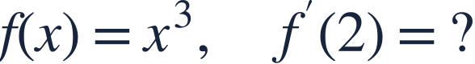
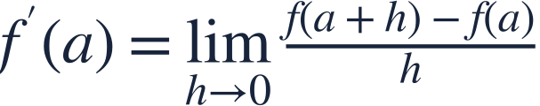
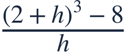
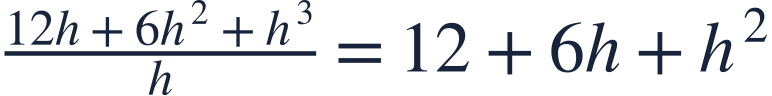
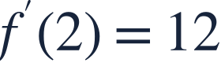
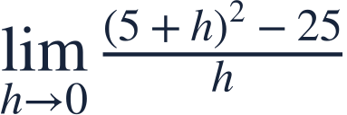

The derivative definition
미분의 정의

The derivative definition turns a nearby difference into an exact rate.
미분의 정의는 가까운 두 점의 차이에서 정확한 변화율을 구합니다.

The derivative definition turns a nearby difference into an exact rate.
미분의 정의는 가까운 두 점의 차이에서 정확한 변화율을 구합니다.

Subtract f(2) before dividing by h. Do not set h=0 yet.
h로 나누기 전에 f(2)를 빼세요. 아직 h=0을 넣지 않습니다.

For a differentiable function, nearby secant slopes settle to one value.
미분가능한 함수에서는 주변 할선의 기울기가 한 값으로 모입니다.
Expand carefully so the factor h becomes visible.
h 인수가 보이도록 차근차근 전개합니다.

Cancel h only before taking the limit.
극한을 취하기 전에 h를 약분합니다.

The remaining h terms vanish in the limit.
극한에서 h가 있는 항들이 0으로 갑니다.
Substituting h=0 into the unsimplified quotient does not compute the derivative.
정리 전 차분몫에 h=0을 대입하는 것으로 미분계수를 구할 수 없습니다.

Use the same expansion-and-cancellation pattern.
같은 전개와 약분 과정을 적용하세요.